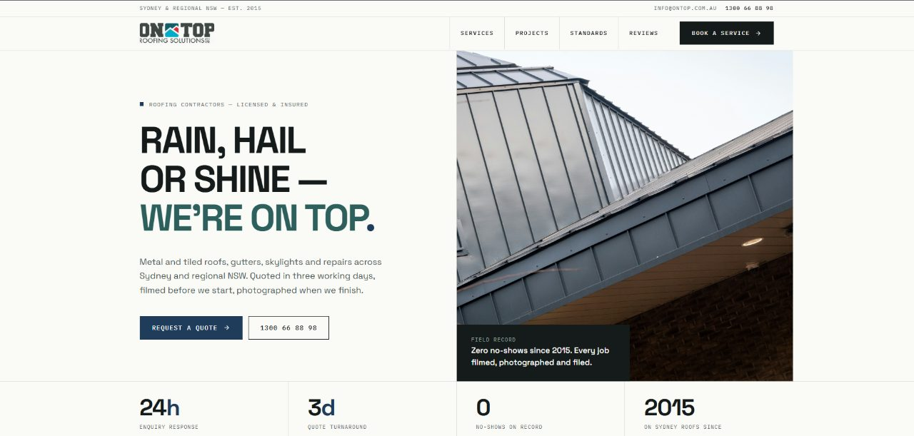

Roofing website design in Brisbane: storm season, Queenslanders and fast quotes
Every Brisbane summer brings storms, and every storm brings a wave of people searching for a roofer on their phone. Your site has a few seconds to look like the one that will turn up.

A Brisbane roofing website has to work on the day after a storm. That means a call button that stays visible on mobile, a storm damage page, a short quote form with photo upload and your QBCC licence where people can see it. If you re-roof Queenslanders, give that work its own page.
Brisbane roofing follows a clear season. From around October to March, afternoon storms roll in from the west, and some of them bring hail and damaging wind. The storms that hit the CBD and inner suburbs are the ones people still mention, and smaller storms come through most years.
When a storm passes, many homeowners open their phones at once. The roofer whose site loads fast and makes calling easy gets the first jobs.
01What should a Brisbane roofing site do after a storm?
Most roofing sites are designed for a calm day. They have a nice hero image, a paragraph about the company and a contact form at the bottom. That is fine in July. In December, after hail, the homeowner wants three answers in under ten seconds: do you do storm repairs, do you cover my suburb, and how do I reach you now.
- Put a call button in the header that stays visible on mobile as the visitor scrolls.
- Add a storm damage page that explains make-safe work, tarping and what to photograph for an insurance claim.
- If you are booked out, say so with a realistic wait time. People respect that more than silence.
- Keep the quote form short: name, phone, suburb, a photo, and one box for details.
02Queenslanders, tin and tile
Brisbane's older suburbs are full of raised timber Queenslanders with corrugated iron roofs, in places like Paddington, Red Hill, Ashgrove, Annerley and Wynnum. Re-roofing these is specialist work. The roof is a big part of how the house looks, owners care about profile and colour, and many sit in character overlay areas with council rules about what can change.
If you do this work, give it its own page. Show the before and after, talk about matching the corrugated profile and the bullnose verandah roof, and mention that you deal with the character rules. That page can help bring in the jobs you most want.
Further out, in places like North Lakes, Springfield and the Logan suburbs, the roofs are mostly concrete tile and Colorbond on brick or rendered homes. The work there is restoration, repairs and replacing tile roofs with metal. Different page, different photos.
03How should you list Brisbane service areas?
Brisbane homeowners often think in terms of north side, south side, east and west. Your area pages can follow the same pattern:
- North side: Chermside, Aspley, Albany Creek, North Lakes, Redcliffe.
- South side: Sunnybank, Mount Gravatt, Carindale, Logan.
- West: Indooroopilly, Kenmore, The Gap, out to Ipswich if you go that far.
- Bayside: Wynnum, Manly, Cleveland, Capalaba.
- Inner city: Paddington, New Farm, West End, Bulimba.
Each one should mention jobs you have done there. If you have not worked somewhere, leave it off.

04What goes wrong on Brisbane roofing sites
- No storm page at all, even from roofers who do mostly storm work in summer.
- Photos of shingle roofs from overseas. Shingle roofs are uncommon in Brisbane, so the photos look out of place.
- A QBCC licence number hidden in the footer in tiny text, or missing. Queensland homeowners are encouraged to check it.
- Contact forms that send to an inbox nobody checks during busy weeks. If the site promises a reply, it needs to arrive.
- Huge image sliders that take several seconds to load on mobile data.
05Common questions
Should I put my QBCC licence number on my website?
Yes, and somewhere easy to see, like the header or the contact section. It answers a question many homeowners already have and saves them looking it up. Keep the number exactly as it appears on your licence so a homeowner can check it straight away.
Will a storm damage page help me get insurance work?
It helps homeowners find you when they are searching after a storm, and it sets expectations about reports and photos. The insurance side still depends on the insurer, but a clear page gets you the first call.
Should I show prices on my roofing website?
Most roofers cannot quote without seeing the roof, and that is fine. A rough guide still helps, like a typical range for a small repair or what changes the price of a re-roof. It filters out people who are far off and shows you are upfront.
How fast should a roofing website load?
On a phone over mobile data, the first screen should appear in two or three seconds. Large photo sliders and heavy page builders are the usual reasons it does not.
Is it worth paying for Google Ads during storm season?
It can be, if the site is ready for the traffic. Ads send people to a page. If that page is slow or has no clear call button, you pay for clicks that never ring.
If you are a Brisbane roofer and your site is not ready for the next storm season, send me a brief. Roofers on the coast face a different version of the same problem, covered in the Gold Coast guide.